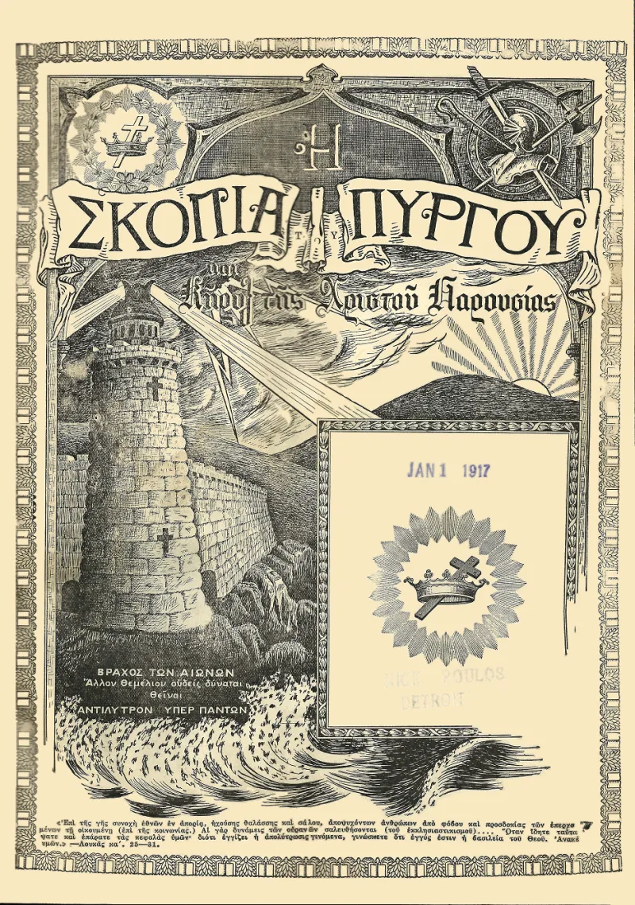
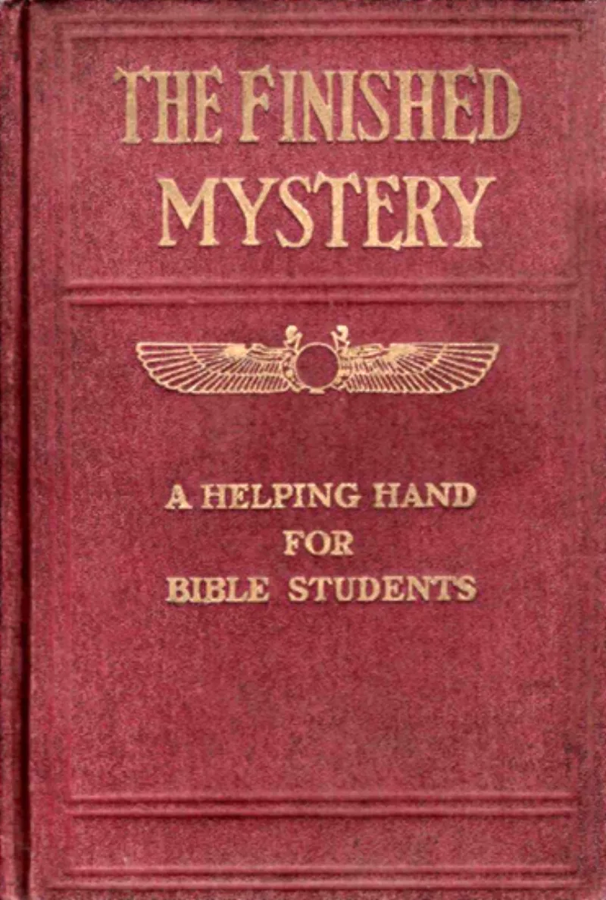
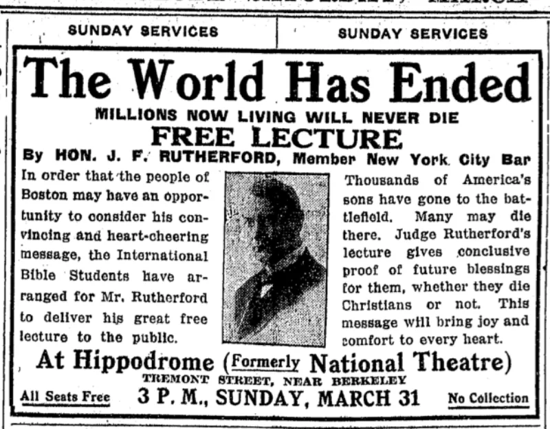

The Watchtower's own publications admit these facts. You can make this point from their library alone.
Russell and Barbour taught that the saints would be taken to heaven in April 1878. Some Bible Students gathered to wait.
When it failed, the date was reinterpreted. It became the raising of sleeping saints and the start of Christ's rule.
Then 1881 was set as the new date. It passed too.
After Russell died, The Finished Mystery (1917) was published as commentary at the level of Scripture. Millions of copies went out.
It predicted for 1918 that "God destroys the churches wholesale and the church members by millions" (p. 485).
The clergy were to be wiped out and the Bible Students glorified that spring. The churches of 1918 outlived the book.
Later printings quietly revised the failed pages.
Their own history book lists these disappointments openly. Proclaimers (1993, pp.
632-633) catalogues 1878, 1881, 1914, 1918 and 1925. It frames them as the honest errors of eager students, like the disciples' premature hopes (Luke 19:11; Acts 1:6).
Awake! of March 22, 1993 adds that none of it was said in Jehovah's name.
The fact that critics can quote these dates from Watchtower books shows the record was preserved, not hidden.
At the time, these were not offered as guesses. The Finished Mystery came out as the posthumous voice of God's channel.
The 1918 warning was preached at doors as a message from God. The "never in Jehovah's name" footnote sits beside the claim to be Jehovah's only channel.
They admit this themselves. Six dated predictions in their own print: 1878, 1881, 1914, 1918, 1925 and 1975.
Not one came true as published. Deuteronomy 18:22 gives both the test and the verdict.
"Your own history book lists 1878, 1881, 1914, 1918 and 1925. How many misses does a channel of God get?"



Their own history book lists the misses, and none was said in Jehovah's name.
The Society's Proclaimers history (1993, pp. 632-633) lists the early letdowns openly. It names 1878, 1881, 1914, 1918 and 1925. It frames them as honest errors by Bible students eager for the Lord's return. Luke 19:11 and Acts 1:6 show the disciples with early kingdom hopes too.
The Awake! of March 22, 1993 adds one point. None of it was ever prefaced 'thus saith Jehovah.' These were wrong guesses drawn from chronology, dropped in public when they failed. False prophets double down instead. And critics quote these dates from Watchtower books, which shows the record was kept, not hidden.
They admit it themselves. Six dated predictions, and not one came true.
Proclaimers grants the dates, and the record is beyond dispute. What that framing hides is the authority claim attached at the time.
The Finished Mystery was not offered as a guess. It came out as the voice of God's channel after Russell's death. And the 1918 warning of churches destroyed 'by millions' was preached at doors as a message from God. The 'we never said thus saith Jehovah' footnote sits beside their own claim to be Jehovah's only channel. See the prophet-paradox case.
Six dated predictions: 1878, 1881, 1914, 1918, 1925 and 1975. Not one came true as published. Deuteronomy 18:22 gives both the test and the verdict.